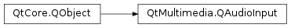

QAudioInput¶
Synopsis¶
Functions¶
- def
bufferSize() - def
bytesReady() - def
elapsedUSecs() - def
error() - def
format() - def
notifyInterval() - def
periodSize() - def
processedUSecs() - def
reset() - def
resume() - def
setBufferSize(bytes) - def
setNotifyInterval(milliSeconds) - def
setVolume(volume) - def
start() - def
start(device) - def
state() - def
stop() - def
suspend() - def
volume()
Signals¶
- def
notify() - def
stateChanged(state)
Detailed Description¶
The
PySide2.QtMultimedia.QAudioInputclass provides an interface for receiving audio data from an audio input device.You can construct an audio input with the system’s
default audio input device. It is also possible to createPySide2.QtMultimedia.QAudioInputwith a specificPySide2.QtMultimedia.QAudioDeviceInfo. When you create the audio input, you should also send in thePySide2.QtMultimedia.QAudioFormatto be used for the recording (see thePySide2.QtMultimedia.QAudioFormatclass description for details).To record to a file:
PySide2.QtMultimedia.QAudioInputlets you record audio with an audio input device. The default constructor of this class will use the systems default audio device, but you can also specify aPySide2.QtMultimedia.QAudioDeviceInfofor a specific device. You also need to pass in thePySide2.QtMultimedia.QAudioFormatin which you wish to record.Starting up the
PySide2.QtMultimedia.QAudioInputis simply a matter of callingPySide2.QtMultimedia.QAudioInput.start()with aPySide2.QtCore.QIODeviceopened for writing. For instance, to record to a file, you can:QFile destinationFile; // Class member QAudioInput* audio; // Class member { destinationFile.setFileName("/tmp/test.raw"); destinationFile.open( QIODevice::WriteOnly | QIODevice::Truncate ); QAudioFormat format; // Set up the desired format, for example: format.setSampleRate(8000); format.setChannelCount(1); format.setSampleSize(8); format.setCodec("audio/pcm"); format.setByteOrder(QAudioFormat::LittleEndian); format.setSampleType(QAudioFormat::UnSignedInt); QAudioDeviceInfo info = QAudioDeviceInfo::defaultInputDevice(); if (!info.isFormatSupported(format)) { qWarning() << "Default format not supported, trying to use the nearest."; format = info.nearestFormat(format); } audio = new QAudioInput(format, this); connect(audio, SIGNAL(stateChanged(QAudio::State)), this, SLOT(handleStateChanged(QAudio::State))); QTimer::singleShot(3000, this, SLOT(stopRecording())); audio->start(&destinationFile); // Records audio for 3000ms }This will start recording if the format specified is supported by the input device (you can check this with
QAudioDeviceInfo.isFormatSupported(). In case there are any snags, use thePySide2.QtMultimedia.QAudioInput.error()function to check what went wrong. We stop recording in thestopRecording()slot.void AudioInputExample::stopRecording() { audio->stop(); destinationFile.close(); delete audio; }At any point in time,
PySide2.QtMultimedia.QAudioInputwill be in one of four states: active, suspended, stopped, or idle. These states are specified by theQAudio.Stateenum. You can request a state change directly throughPySide2.QtMultimedia.QAudioInput.suspend(),PySide2.QtMultimedia.QAudioInput.resume(),PySide2.QtMultimedia.QAudioInput.stop(),PySide2.QtMultimedia.QAudioInput.reset(), andPySide2.QtMultimedia.QAudioInput.start(). The current state is reported byPySide2.QtMultimedia.QAudioInput.state().PySide2.QtMultimedia.QAudioOutputwill also signal you when the state changes (PySide2.QtMultimedia.QAudioInput.stateChanged()).
PySide2.QtMultimedia.QAudioInputprovides several ways of measuring the time that has passed since thePySide2.QtMultimedia.QAudioInput.start()of the recording. TheprocessedUSecs()function returns the length of the stream in microseconds written, i.e., it leaves out the times the audio input was suspended or idle. ThePySide2.QtMultimedia.QAudioInput.elapsedUSecs()function returns the time elapsed sincePySide2.QtMultimedia.QAudioInput.start()was called regardless of which states thePySide2.QtMultimedia.QAudioInputhas been in.If an error should occur, you can fetch its reason with
PySide2.QtMultimedia.QAudioInput.error(). The possible error reasons are described by theQAudio.Errorenum. ThePySide2.QtMultimedia.QAudioInputwill enter theStoppedStatewhen an error is encountered. Connect to thePySide2.QtMultimedia.QAudioInput.stateChanged()signal to handle the error:void AudioInputExample::handleStateChanged(QAudio::State newState) { switch (newState) { case QAudio::StoppedState: if (audio->error() != QAudio::NoError) { // Error handling } else { // Finished recording } break; case QAudio::ActiveState: // Started recording - read from IO device break; default: // ... other cases as appropriate break; } }
-
class
PySide2.QtMultimedia.QAudioInput(audioDeviceInfo[, format=QAudioFormat()[, parent=nullptr]])¶ -
class
PySide2.QtMultimedia.QAudioInput([format=QAudioFormat()[, parent=nullptr]]) Parameters: - format –
PySide2.QtMultimedia.QAudioFormat - audioDeviceInfo –
PySide2.QtMultimedia.QAudioDeviceInfo - parent –
PySide2.QtCore.QObject
Construct a new audio input and attach it to
parent. The device referenced byaudioDeviceis used with the inputformatparameters.Construct a new audio input and attach it to
parent. The default audio input device is used with the outputformatparameters.- format –
-
PySide2.QtMultimedia.QAudioInput.bufferSize()¶ Return type: PySide2.QtCore.intReturns the audio buffer size in bytes.
If called before
PySide2.QtMultimedia.QAudioInput.start(), returns platform default value. If called beforePySide2.QtMultimedia.QAudioInput.start()butPySide2.QtMultimedia.QAudioInput.setBufferSize()was called prior, returns value set byPySide2.QtMultimedia.QAudioInput.setBufferSize(). If called afterPySide2.QtMultimedia.QAudioInput.start(), returns the actual buffer size being used. This may not be what was set previously byPySide2.QtMultimedia.QAudioInput.setBufferSize().
-
PySide2.QtMultimedia.QAudioInput.bytesReady()¶ Return type: PySide2.QtCore.intReturns the amount of audio data available to read in bytes.
Note: returned value is only valid while in
QAudio.ActiveStateorQAudio.IdleStatestate, otherwise returns zero.
-
PySide2.QtMultimedia.QAudioInput.elapsedUSecs()¶ Return type: PySide2.QtCore.qint64Returns the microseconds since
PySide2.QtMultimedia.QAudioInput.start()was called, including time in Idle and Suspend states.
-
PySide2.QtMultimedia.QAudioInput.error()¶ Return type: PySide2.QtMultimedia.QAudio.ErrorReturns the error state.
-
PySide2.QtMultimedia.QAudioInput.format()¶ Return type: PySide2.QtMultimedia.QAudioFormatReturns the
PySide2.QtMultimedia.QAudioFormatbeing used.
-
PySide2.QtMultimedia.QAudioInput.notify()¶
-
PySide2.QtMultimedia.QAudioInput.notifyInterval()¶ Return type: PySide2.QtCore.intReturns the notify interval in milliseconds.
-
PySide2.QtMultimedia.QAudioInput.periodSize()¶ Return type: PySide2.QtCore.intReturns the period size in bytes.
Note: This is the recommended read size in bytes.
-
PySide2.QtMultimedia.QAudioInput.processedUSecs()¶ Return type: PySide2.QtCore.qint64Returns the amount of audio data processed since
PySide2.QtMultimedia.QAudioInput.start()was called in microseconds.
-
PySide2.QtMultimedia.QAudioInput.reset()¶ Drops all audio data in the buffers, resets buffers to zero.
-
PySide2.QtMultimedia.QAudioInput.resume()¶ Resumes processing audio data after a
PySide2.QtMultimedia.QAudioInput.suspend().Sets
PySide2.QtMultimedia.QAudioInput.error()toQAudio.NoError. SetsPySide2.QtMultimedia.QAudioInput.state()toQAudio.ActiveStateif you previously called start(PySide2.QtCore.QIODevice*). SetsPySide2.QtMultimedia.QAudioInput.state()toQAudio.IdleStateif you previously calledPySide2.QtMultimedia.QAudioInput.start(). emitsPySide2.QtMultimedia.QAudioInput.stateChanged()signal.
-
PySide2.QtMultimedia.QAudioInput.setBufferSize(bytes)¶ Parameters: bytes – PySide2.QtCore.intSets the audio buffer size to
valuebytes.Note: This function can be called anytime before
PySide2.QtMultimedia.QAudioInput.start(), calls to this are ignored afterPySide2.QtMultimedia.QAudioInput.start(). It should not be assumed that the buffer size set is the actual buffer size used, callingPySide2.QtMultimedia.QAudioInput.bufferSize()anytime afterPySide2.QtMultimedia.QAudioInput.start()will return the actual buffer size being used.
-
PySide2.QtMultimedia.QAudioInput.setNotifyInterval(milliSeconds)¶ Parameters: milliSeconds – PySide2.QtCore.intSets the interval for
PySide2.QtMultimedia.QAudioInput.notify()signal to be emitted. This is based on themsof audio data processed not on actual real-time. The minimum resolution of the timer is platform specific and values should be checked withPySide2.QtMultimedia.QAudioInput.notifyInterval()to confirm actual value being used.
-
PySide2.QtMultimedia.QAudioInput.setVolume(volume)¶ Parameters: volume – PySide2.QtCore.qrealSets the input volume to
volume.The volume is scaled linearly from
0.0(silence) to1.0(full volume). Values outside this range will be clamped.If the device does not support adjusting the input volume then
volumewill be ignored and the input volume will remain at 1.0.The default volume is
1.0.Note: Adjustments to the volume will change the volume of this audio stream, not the global volume.
-
PySide2.QtMultimedia.QAudioInput.start(device)¶ Parameters: device – PySide2.QtCore.QIODeviceStarts transferring audio data from the system’s audio input to the
device. Thedevicemust have been opened in theWriteOnly,AppendorReadWritemodes.If the
PySide2.QtMultimedia.QAudioInputis able to successfully get audio data,PySide2.QtMultimedia.QAudioInput.state()returns eitherQAudio.ActiveStateorQAudio.IdleState,PySide2.QtMultimedia.QAudioInput.error()returnsQAudio.NoErrorand thePySide2.QtMultimedia.QAudioInput.stateChanged()signal is emitted.If a problem occurs during this process,
PySide2.QtMultimedia.QAudioInput.error()returnsQAudio.OpenError,PySide2.QtMultimedia.QAudioInput.state()returnsQAudio.StoppedStateand thePySide2.QtMultimedia.QAudioInput.stateChanged()signal is emitted.See also
-
PySide2.QtMultimedia.QAudioInput.start() Return type: PySide2.QtCore.QIODeviceReturns a pointer to the internal
PySide2.QtCore.QIODevicebeing used to transfer data from the system’s audio input. The device will already be open andPySide2.QtCore.QIODevice.read()can read data directly from it.Note
The pointer will become invalid after the stream is stopped or if you start another stream.
If the
PySide2.QtMultimedia.QAudioInputis able to access the system’s audio device,PySide2.QtMultimedia.QAudioInput.state()returnsQAudio.IdleState,PySide2.QtMultimedia.QAudioInput.error()returnsQAudio.NoErrorand thePySide2.QtMultimedia.QAudioInput.stateChanged()signal is emitted.If a problem occurs during this process,
PySide2.QtMultimedia.QAudioInput.error()returnsQAudio.OpenError,PySide2.QtMultimedia.QAudioInput.state()returnsQAudio.StoppedStateand thePySide2.QtMultimedia.QAudioInput.stateChanged()signal is emitted.See also
-
PySide2.QtMultimedia.QAudioInput.state()¶ Return type: PySide2.QtMultimedia.QAudio.StateReturns the state of audio processing.
-
PySide2.QtMultimedia.QAudioInput.stateChanged(state)¶ Parameters: state – PySide2.QtMultimedia.QAudio.State
-
PySide2.QtMultimedia.QAudioInput.stop()¶ Stops the audio input, detaching from the system resource.
Sets
PySide2.QtMultimedia.QAudioInput.error()toQAudio.NoError,PySide2.QtMultimedia.QAudioInput.state()toQAudio.StoppedStateand emitPySide2.QtMultimedia.QAudioInput.stateChanged()signal.
-
PySide2.QtMultimedia.QAudioInput.suspend()¶ Stops processing audio data, preserving buffered audio data.
Sets
PySide2.QtMultimedia.QAudioInput.error()toQAudio.NoError,PySide2.QtMultimedia.QAudioInput.state()toQAudio.SuspendedStateand emitPySide2.QtMultimedia.QAudioInput.stateChanged()signal.
-
PySide2.QtMultimedia.QAudioInput.volume()¶ Return type: PySide2.QtCore.qrealReturns the input volume.
If the device does not support adjusting the input volume the returned value will be 1.0.
© 2018 The Qt Company Ltd. Documentation contributions included herein are the copyrights of their respective owners. The documentation provided herein is licensed under the terms of the GNU Free Documentation License version 1.3 as published by the Free Software Foundation. Qt and respective logos are trademarks of The Qt Company Ltd. in Finland and/or other countries worldwide. All other trademarks are property of their respective owners.